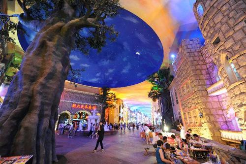
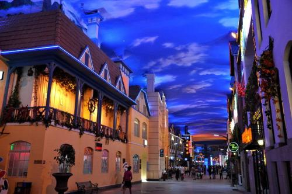
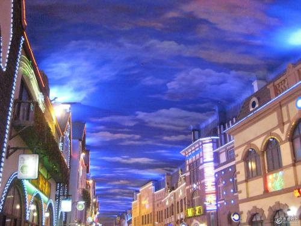
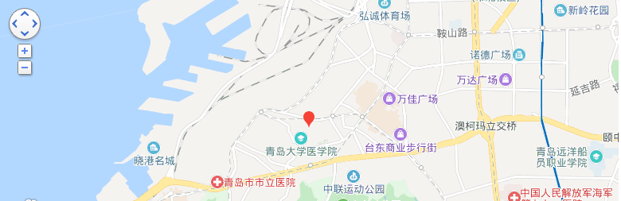

天幕城
时间：2019/11/11

【简介】 | ||
|---|---|---|
|  |
天幕城将很有代表性、很有特色的胶澳总督府、亨利王子饭店、青岛市民大礼堂、胶澳帝国法院、花石楼等20多处青岛著名历史建筑融入到室内步行街的外立面造型设计中，形成了一道独特的万国建筑风景线。 天幕城入口以欧式城堡为起点，将人带入神秘的古代和现代、白昼与黑夜的交错空间。在入口内侧，设置了视觉冲击强烈，面积达800余平方米的水幕墙，下部为400平方米水幕台阶，形成晶莹剔透的帘幕。 青岛天幕城整体建筑采用的是巴洛克风格，并将东西方艺术和谐的融合在一起。 |
|
|  |
天幕城是一条综合性商业街。尽管外观稍显陈旧，内里却别有洞天。城内有青岛纺织博物馆，陈列了部分旧时老式的纺织工具及机器，还有澳总督府、亨利王子饭店、青岛市民大礼堂、胶澳帝国法院、 青岛花石楼、大港火车站等20多处具有代表性的老建筑做成的微缩景观。主街道两边还有各国美食餐厅、小型旅馆和购物商店，也不乏街头行为艺人，穿着奇装异服，但小心给他们拍照是要收费的。 不过，游客们多是专程为了天幕城顶上的荧光天幕而来。熠熠星空、湛蓝天际、五彩夕霞等，如油画般变幻多姿，别有一番特色。 |
|
【具体介绍】
美食：天幕城以餐饮业为主导，吸纳国际特色餐饮，吸引了国内及世界各地的名店、名厨、名菜、名宴，荟萃特色名吃美味，集合了传统膳食、融中华8大菜系和欧式菜。既有港台式茶餐厅，又有西亚餐饮；既有淮洋菜，又有原生态餐饮，还有时令小吃。天幕城以“统调、统运、统结”办法，实行串菜制，演绎了“进一家店 品百家菜”的当代满汉全席版。
演艺：城内规划建设了2300平方米天幕天使演艺工场，结合城以高档餐饮、娱乐休闲的主体多元业态，贴近不同档次消费者的需求，高质量建设了天使演艺工场。青岛天幕城天使演艺工场根据天幕城餐饮娱乐休闲业态丰富，人流量大、文化需求强的特点，每晚演出分三个时段：情调时段、大型综艺晚会时段、特色表演。
健身：天幕城网球场位于2号楼的顶层，有面积达300多平方米和健身房。
社会影响：运营后的青岛天幕城，带动和辐射了周边区域经济的快速发展，成为岛城人品尝美食、款待八方客的去处，为青岛市增加一处集餐饮、休闲、娱乐于一身，融商业气息、人文氛围、艺术创作为一体的旅游观光景。
【交通信息】
距机场距离约:18.91公里，车程时间约:30分钟； 距火车站距离约:3.12公里，车程时间约:10分钟； 距汽车站距离约:3.34公里，车程时间约:11分钟； 出租车：起步价9元/3公里，以后每公里1.4元，全部费用再加1元燃油费。夜间22时到次日5时每公里1.5元。 公交车：市内可以乘坐2路、8路、211路、217路、218路、221路、222路、232路、301路、320路、326路、365路、371路、隧道3路、隧道7路到利津路站下，步行15分钟左右即到。